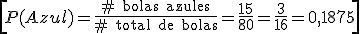
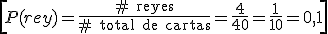
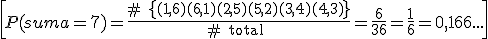

Regla de Laplace
En un experimento regular, con sucesos equiprobables, la probabilidad de un suceso A es el número de sucesos favorables a A dividido por el número de sucesos del espacio muestral.
Ejemplo 1. En una bolsa tenemos 40 bolas rojas, 25 verdes y 15 azules, todas del mismo tamaño. Si extraemos una, ¿cuál es la probabilidad de que sea azul?

\[P(Azul)=\frac{\#\text{ bolas azules}}{\#\text{ total de bolas}}=\frac{15}{80}=\frac{3}{16}=0,1875\]
Ejemplo 2. Si sacamos una carta de una baraja de 40, ¿cuál es la probabilidad de sacar un rey?

\[P(rey)=\frac{\#\text{ reyes}}{\#\text{ total de cartas}}=\frac{4}{40}=\frac{1}{10}=0,1\]
Ejemplo 3. Si tiramos dos dados, ¿cuál es la probabilidad de que sumen 7?
E = {(1,1), (1,2), (1,3), ….(1,6), (2,1),…(2,6), (3,1), ….(6,6)}

\[P(suma=7)=\frac{\#\text{ }\left\{ \text{(1}\text{,6)(6}\text{,1)(2}\text{,5)(5}\text{,2)(3}\text{,4)(4}\text{,3)} \right\}}{\#\text{ total }}=\frac{6}{36}=\frac{1}{6}=0,166...\]
Ejercicios
1.- Si tiramos dos dados, calcula la probabilidad de los sucesos:
A= {sacar al menos un 1}, B={dos 6}; C={la suma es 6}
2.- Sacamos una carta de una baraja española de 40 cartas. Calcula la probabilidad de los sucesos:
A= {es un caballo}; B={no es de oros}; C={es de espadas o un rey}
Soluciones: 1.- P(A)= 11/36; P(B)=1/36; P(C)=5/36; 2.- P(A)=4/40=1/10; P(B)=30/40=3/4; P(C)=13/40
Obra publicada con Licencia Creative Commons Reconocimiento No comercial Compartir igual 3.0